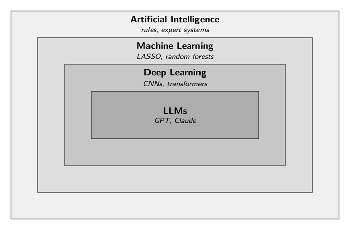

Imagine three economists. The first studies why some workers earn more than others and opens a dataset with hundreds of candidate predictors per person—schooling, family income, neighborhood, job history, and even commuting time. The puzzle is not how to fit a model. It is which variables to even put on the right-hand side. The second wants to predict the central bank's next rate move, but her data is not numbers. It is twenty years of policy statements. The third has built a macroeconomic model with thousands of interacting parts that no traditional method can solve. Ten years ago, none of these problems would have been solvable. Today, all three reach for some form of Artificial Intelligence (AI). And they are far from alone.
Many economists now use AI for prediction or causal inference. This article is about what they are reaching for, and why.
AI fits into existing economic research designs rather than replacing them. What matters is knowing which tool fits which question.
The AI Family: From Rules to Language Models
AI is in our lives more than you might think, and it is not one thing but a layered family. It started with humans writing rules for machines to follow. Imagine an early credit-scoring system. You give it a rule, "reject if income is below 2,000 dollars or three or more late payments," and it evaluates every new applicant accordingly. Then came machine learning (ML). The algorithm reads thousands of past applications and figures out the rules itself. Researchers still pick which features to feed in, a step called feature engineering. Deep learning (DL) skips even that. The algorithm learns the features itself. Since 2022, large language models (LLMs) have gone further still, letting machines work with raw text the way they once worked with spreadsheets.

For simplicity, economists call every method in this family AI, regardless of the precise label (ML, DL, or LLM). Economists use AI for five main purposes: prediction, causal inference, variable selection and dimensionality reduction, extracting information from unstructured data, and solving complex models. This taxonomy comes from a short line of survey papers by Mullainathan and Spiess (2017), Athey and Imbens (2019), and Fernández-Villaverde (2025). After scanning newly published papers in top economics journals for the ML&ECON Digest Substack, the same five purposes keep appearing. The categories often overlap. A single paper might extract text from central bank statements, use a variable-selection step to select appropriate controls, and then estimate a causal effect using double ML.
Prediction: The Power and the Price
Prediction is one of the earliest and most common uses of AI in economics. Supervised ML models first forecast macroeconomic variables like inflation and asset prices, and have since spread to micro outcomes like house prices, loan defaults, and who responds to a job-training program. So why do these methods often beat traditional models? Not because they capture nonlinear patterns. They also discipline themselves. Penalties in models like LASSO or ridge regression prevent overfitting to noise, so predictions hold up on new observations.
But there is a price. ML predicts well but cannot explain. A random forest can forecast inflation and rank which variables matter, but it does not give the coefficients and standard errors economists need for inference. Mullainathan and Spiess (2017) call this the ŷ-versus-β̂ split. ML is built for predicting outcomes (ŷ). Classical econometrics is built for parameters (β̂). Prediction also matters inside causal designs. Double ML, for example, predicts the outcome and the treatment from many controls, then estimates the causal effect from the residuals.
From Correlation to Causation
An economics student hears "correlation is not causation" early in their econometrics course. So what is causation, and how can we use AI to study it? Causal inference asks what would have happened if a person had received a different treatment, but we never observe both worlds. Modern methods use ML to estimate the missing counterfactual. Tools like double ML and causal forests build data-driven control groups while keeping the parameter of interest interpretable. Athey and Imbens (2019), the standard reference on ML for causal inference, draw a clear line: ML does not replace identification. It replaces the ordinary least squares (OLS) step inside an identification strategy that the researcher has already designed.
Often, the question is not which model fits best, but which variables to keep, or how to compress many into a few. Two approaches handle this. The first is variable selection. Methods like shrinkage estimators add a penalty on coefficients, pushing weak signals to zero, leaving a sparse, interpretable model. The second is dimensionality reduction. Principal component analysis or autoencoders compress correlated predictors into composite features, as macroeconomists do with factor models. Both also feed into causal designs. In instrumental variable (IV) settings with many candidate instruments, ML can pre-screen valid ones before the second stage.
Reading the Non-Numeric Trail
Empirical economics used to run on numbers like wages, prices, GDP, and balance-sheet items. But economic activity also leaves a non-numeric trail. Text is the common one, but the same logic applies to audio and images. Speech models extract tone and hesitation from earnings calls. Satellite imagery proxies for local economic activity where official statistics are weak. Computer vision models classify housing quality or crop conditions from photos. Gentzkow, Kelly, and Taddy (2019) made the early case for treating text as data. Dell (2025) extends it. Deep learning here is a measurement tool that imputes structured variables from text, images, and audio for use in econometric designs. Data that economists once skipped past is now data they can put on the right-hand side of a regression.
Solving the Unsolvable: High-Dimensional Models
Macroeconomic models often require solving systems of high-dimensional equations. Think of a heterogeneous-agent model whose state space can run into the thousands, or a New Keynesian model where the zero lower bound binds stochastically. Classical methods like value function iteration and perturbation-based methods run into the curse of dimensionality. Economists end up working on the models they can solve, not the ones they would like to solve. Deep learning offers another path. Neural networks approximate solutions by minimizing residuals under equilibrium conditions, handling high-dimensional spaces directly. A growing literature now solves dynamic models that were intractable a decade ago. This is no longer prediction or inference. It is computation. Fernández-Villaverde (2025), the recent benchmark on this approach, walks through it using the neoclassical growth model.
Why It All Matters
What ties these five uses together is not a single algorithm but a way of approaching empirical work. AI fits into existing economic research designs rather than replacing them. What matters is knowing which tool fits which question. The key insight is that AI is not destiny. It is a choice.
Selected references
- Athey, S., & Imbens, G. W. (2019). Machine learning methods that economists should know about. Annual Review of Economics, 11, 685–725.
- Dell, M. (2025). Deep learning for economists. Journal of Economic Literature, 63(1), 5–58.
- Fernández-Villaverde, J. (2025). Deep learning for solving economic models (NBER Working Paper No. 34250). National Bureau of Economic Research.
- Gentzkow, M., Kelly, B., & Taddy, M. (2019). Text as data. Journal of Economic Literature, 57(3), 535–574.
- Goodfellow, I., Bengio, Y., & Courville, A. (2016). Deep learning. MIT Press.
- Mullainathan, S., & Spiess, J. (2017). Machine learning: An applied econometric approach. Journal of Economic Perspectives, 31(2), 87–106.